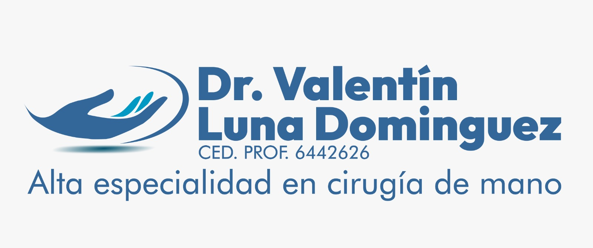
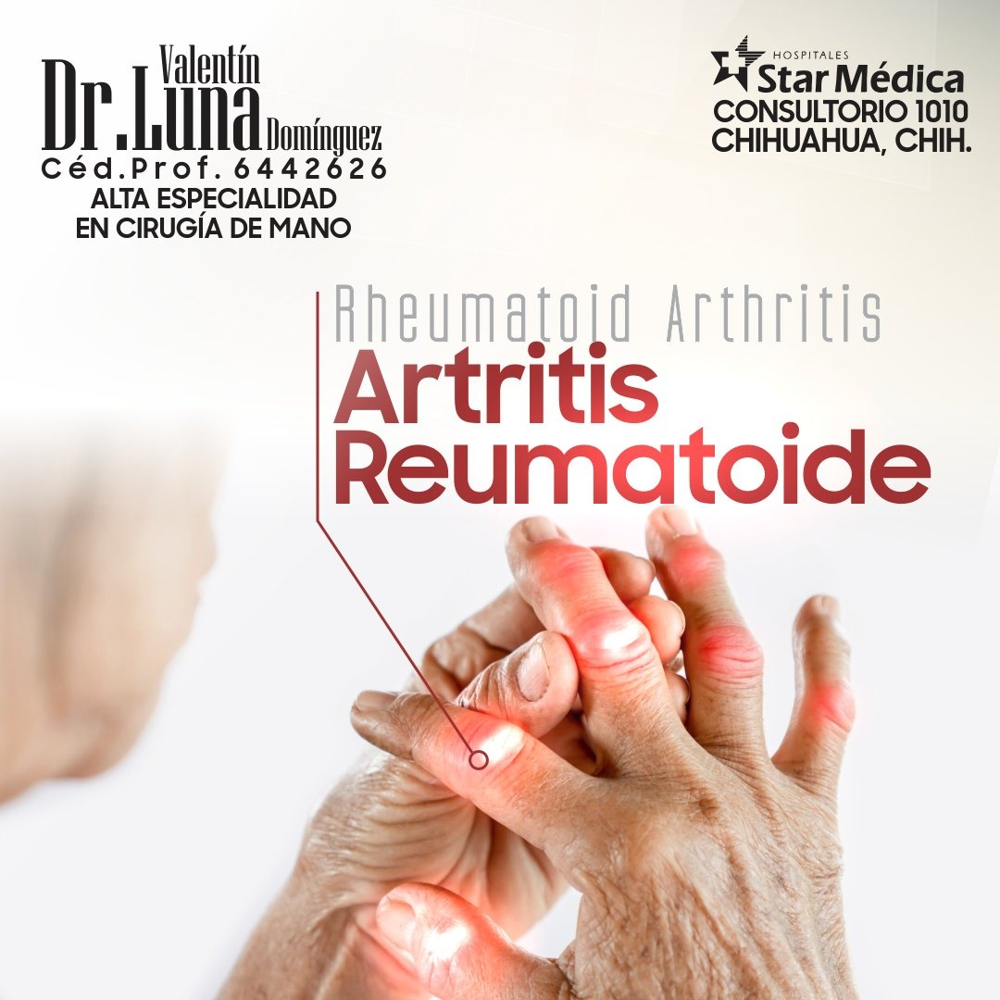
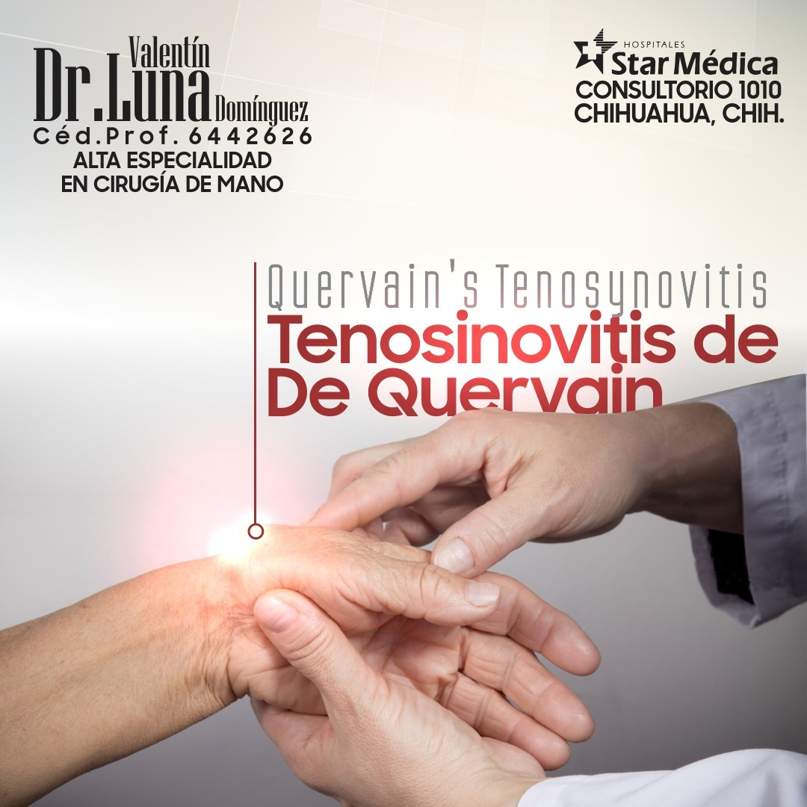
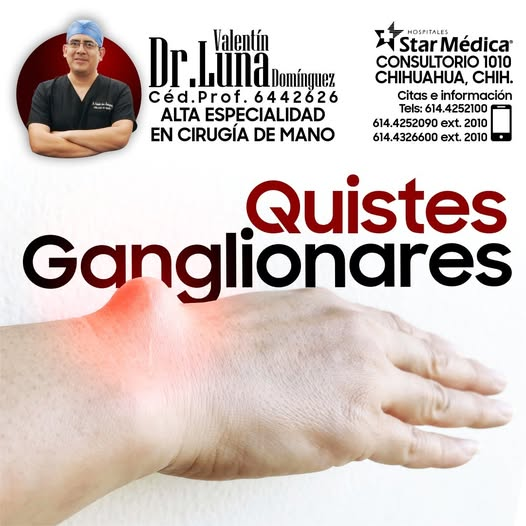
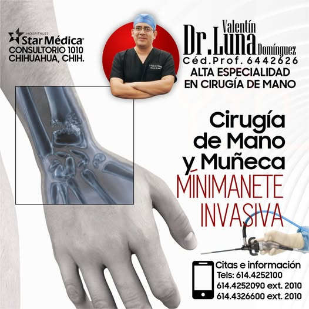

✓
Quistes Ganglionares
Diagnóstico y tratamiento de quistes en mano y muñeca, con opciones desde aspiración hasta cirugía mínimamente invasiva.
Hospital Star Médica · Consultorio 1010 · Chihuahua, Chih.
El Dr. Valentín Luna Domínguez es especialista en Cirugía de Mano con enfoque en procedimientos mínimamente invasivos para quistes ganglionares, dedo en gatillo, artritis reumatoide y más.
Consulta sin compromiso · Atención especializada en mano y muñeca.

Cirugía de Mano y Muñeca

El Dr. Valentín Luna Domínguez cuenta con Alta Especialidad en Cirugía de Mano. Atiende en Hospital Star Médica, Consultorio 1010, en Chihuahua, Chihuahua.
Su práctica combina técnicas mínimamente invasivas con un trato humano y cercano. Cada paciente recibe una explicación clara de su diagnóstico, las opciones de tratamiento disponibles y el proceso completo de recuperación.
Diagnóstico y tratamiento de quistes en mano y muñeca, con opciones desde aspiración hasta cirugía mínimamente invasiva.
Procedimientos artroscópicos de mano y muñeca con mínimas cicatrices y recuperación acelerada.
Tratamiento del dedo en gatillo con técnicas percutáneas o abiertas según el caso clínico.
Manejo quirúrgico y conservador de la artritis reumatoide en mano, incluyendo sinovectomía y reconstrucción articular.
Formación específica en Cirugía de Mano con cédula 6442626.
Cada consulta dura lo necesario. Explicación clara del diagnóstico.
Dentro del Hospital Star Médica, con todos los recursos hospitalarios disponibles.
Técnicas modernas para menor dolor y recuperación más rápida.
Acompañamiento desde la consulta inicial hasta la recuperación completa.
“Tenía un quiste en la muñeca desde hacía años. El Dr. Luna lo trató sin cirugía abierta y en semanas ya no sentía nada. Excelente.”
Roberto C. Quiste Ganglionar“No podía doblar el dedo sin dolor. El procedimiento fue rapidísimo y la recuperación mejor de lo esperado. Muy agradecida.”
Sofía R. Dedo en Gatillo“Con artritis en ambas manos, el Dr. Luna me explicó todas las opciones con mucha paciencia. El tratamiento ha mejorado mucho mi calidad de vida.”
Jorge M. Artritis Reumatoide“Desde la primera cita sentí confianza total. La cirugía fue precisa y el seguimiento excelente. Lo recomiendo ampliamente.”
Elena V. Cirugía de MuñecaConoce algunos de los procedimientos y casos atendidos por el Dr. Valentín Luna en cirugía de mano.






Consultorio 1010
Chihuahua, Chihuahua
614 425 2100
614 425 2090 ext. 2010
614 432 6600 ext. 2010
Lun–Vie 9:00–18:00
Sáb previa cita
Atendemos en Hospital Star Médica, Consultorio 1010, Chihuahua. Con gusto te orientamos sobre tu padecimiento.